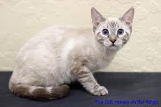
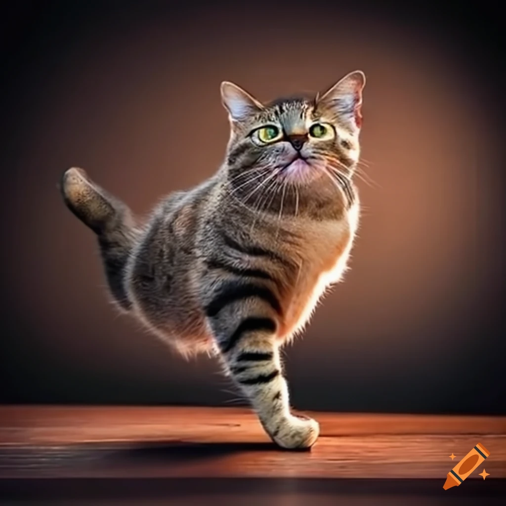

Before, you scroll down I removed the Dictionary Of Hard Words button, so now you can click on a word and
automatically get the Dictionary Of Hard Words.
I also made a mobile-friendly version. Because for mobile readers, It is so tight and compressed.
Chatper 1 Their Life, Part 1, As a Kitten 1-7 months old
Cats start as a kitten, your cat will go to more physical and mental
changes, With a lot happening so quick it is important for you to have a good, balanced
friendly and confident cat.
Here is what kittens look like, Don't worry, this is the start.
Chatper 2, As a Junior 1-2 years old
Just like with puberty and adolescence, or this stage The Junior Stage, It
can be a rough time for cats, Cats reach full size and have learned their enviroment
Many cats at this stage will experience, The litterbox size change, Has to be the right size for your cat
for 2 reasons
Size: Litter boxes shouls be large enough for cats to turn around
scratch without touching the sides
Cleanliness: Cats don't like smell and want a clean enviroment
Scooping and cleaning regularly help cats from avoiding it, Cat urine has ammonia so the smell will be worse the longer
it's left.
Here is a photo of a junior cat

Chatper 3, Adult Age 3 to 10 years old
Cats in this stage now have made their basic personality, They dont need a lot of
supervision as a kitten Still there are important things for an adult cat, Your cat will not be as active,
Because your cat probably has less energy.But your cat still needs socialization, Also adult cats need yearly
checks,Here are important stuff you need to follow.
Make sure you made your cats litter box bigger.
At this stage and on, Provide easy access to basic needs. As cats age
and may they are more likely to getting arthritis and may have less control
their bowls and bladder. It's a good idea to buy litter boxes on every floor
to make easy to get
Chatper 4, Senior Age, 11-14 years old
In their golden years,Cats often sleep more
Lab work is regularly done at the yearly vet visit It will help the vet think a baseline for your cats health.
Senior cats need less fat and calories.
Senior cats may need help getting around.
A photo of a Senior Cat
Chatper 5, Geriatric. 15 years to 26 years
These cats encounter medical issues, exams twice a year, Keeping your pet as
comfortable and as healthy as possible is really important, While this stage lasts years be prepared
to make risky decisions. Giving your
pet the best care is important.
Part 2, The Body
When cats grow older the body gets older, Slowly but surely your cats bones
will get older. It is important to keep your cat healthy. But anyways lets
move on.
Chatper 1, Part 2. Head
Whiskers: Most of a cat's whiskers grow on the face, The cat's
muzzle, above the eye and cheek, All grow whiskers. On each muzzle of
most cats, There are 4 rows of 12 whiskers which is 48 whiskers total.
Muzzle: A cat muzzle is a guard made of straps/wire that goes over a cat's
nose and mouth to prevent it from biting, Muzzles can be used on a lot of siuations
Foreheads: Cats have foreheads for many reasons, including scent glands, affection and
markings. The nape contains losse skin known as a scruff. This non-aware area of skin is used by
mother cat to carry kittens with teeth.
Cat Ears, Phase 1
Ear tufts: Cat ear tufts are the fur
that grows from the tips of the ears, Cat ear tufts work to help
to get sound directly to the cat's ears
The outer ear includes the pinna and the ear canal. The pinna is
shaped to grab sound waves and tunnel them past the ear canal to the
eardrum.
Ear furnshings are hairs play a major role in maintaining ear health
by providing a barrier to help prevent a variety of things from infiltarting
the sensitive ear canal.
Phase 2, Cat Eyes
Eyelashes: Eyelashes in cats, like other animals. Help protect the eyes
from harm. Can be used as dust catchers, keeping debris out of the eyes.
That could cause harm, injury, infection, or destory vision. Trust me,
Keep your cat out from those things.
A cats pupil, the black spot in the middle of it's eye, controls
how much light enters the eye. The pupil closes or opens to let less
or more light.
: Cats have a third eyelid to bring a added
layer of protection and keep the keeps moist while still allowing
to see normal. The nictitaing membrane is not usually seeable
unless any bad condition is here.
Iris: The colored, circular area around the pupil controls the
total light that enters the eye by making the pupil bigger or smaller.
The sclera, or white part of a cat's eye, is the tough outer layer
of the eyeball that supports its shape and helps it from injury.
The sclera is covered by a thin membrane called the conjuctiva, which runs
to the edge of the of the cornea and patches the inside of the eyelid.
The point at which the cornea, bulbar conjuctiva, and sclera meet
called the limbus. The cornea is at four layers, Firstly The Anterior Epithellium
which is attached to its own basement membrane. The Stroma, which makes up 90%
of corneal thickness which means barely 5% for the rest of the layers.
Phase 3, Cat Nose And Mouth
These two parts support Phase 2, Cat Nose And Mouth
The hairless, wet skin at the tip of it's nose.
This area draws moisture from your cat lips to the nose, Thats what
keeps it wet.
Cat's chin and mouth
Cat's chin: A cat's chin is covered in sensitive whiskers that help detect nearby objects
and travel their enviroment. This area also plays a role in scent marking.
Cat's mouth: is critical for eating and drinking, helping them chew and swallow food.
Evey animal needs a mouth so it can chew and swallow food. Or not...
A cat's muzzle, which includes the nose and mouth. is packed with sensory receptors
that enchane their sense of smell and touch. The helps them detect food, idenify different
animals and navigate the surroundings.
Chatper 2, Part 2. The Body
Phase 1: Tail of a Cat
Tail: The cat's tail acts as a critical balance aid, helping navigate the surroundings
with agillty. The base of a cat's tail has strong muscles that help them keep their balance.
The muscles connect to you'r cat's body and make better at jumping/turning. On the top, you
can see a cat jumping.

Or else it will end up sadly falling/hurting itself.
Cat's are kinda OP.
Phase 2: Cat's Flank
A cat's flank is the side of their body, It's where you will find their kidneys.
Which are important for keeping the body clean. If they feel scared, They might puff their
flanks to look bigger/scarier.
Phase 3: A Cat's Back
This part of the cat's body provides flexibility and power for movement,
houses the spine and supporting muscles.
Fun Fact: It can help with shock absorption
A cat's chest
A cat's chest houses vital organs like the heart and lungs. It also has powerful
muscles for breathing/walking and jumping.
A cat's forelegs
The cat's forelegs important for balance, walking, climbing
and capturing prey, Or not. It also functions as hands for digging
and gromming, playing
A cat's paws
The cat's paws are like feet and hands. Like feet and hands. It helps
with walking climbing and hunting. Sharp claws are used in catching
and climbing. while soft pads make them quiet and steady.
A cat's belly
Houses vital organs like the stomach, intestines, liver
and kidneys. It's also where their soft, vulnerable underbelly is placed
which is a protected area.